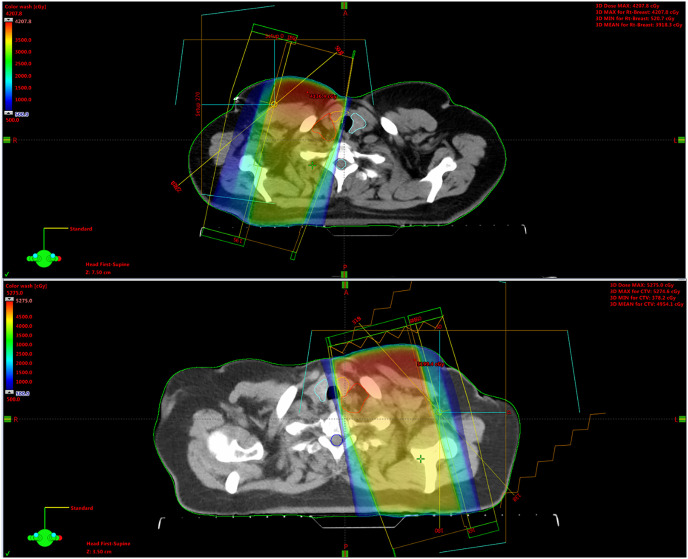
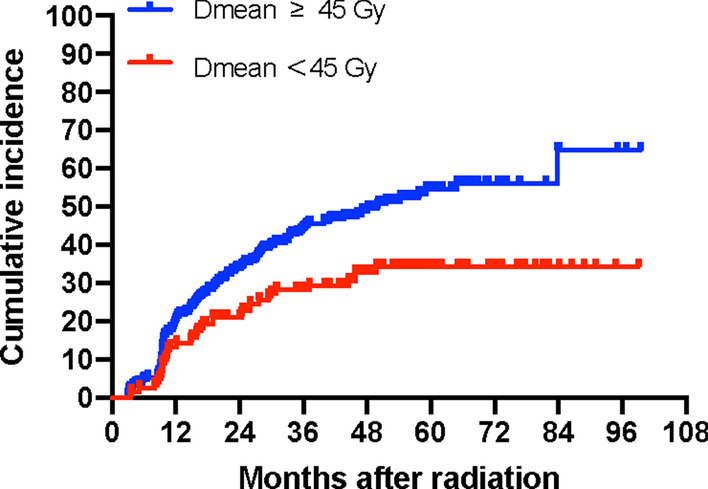

3110 — Suy giáp & ung thư tuyến giáp thứ phát sau xạ đầu cổ / Radiation-induced hypothyroidism & secondary thyroid cancer
Tags: pattern:suy-giap pattern:teo-tuyen-giap pattern:not-tuyen-giap vung:tuyen-giap vung:dau-co protocol:TSH protocol:SA-tuyen-giap score:TIRADS score:Dmean
Mức chắc chắn (certainty): tổng hợp y văn (literature synthesis) — số liệu lấy từ một tổng quan hệ thống 111 bài (Cancers 2023 — PMC10486996), ba đoàn hệ có liều–thể tích (404 ca NPC, Radiat Oncol 2022 — PMC8935811; 116 ca, J Radiat Res 2015 — PMC4426930; 64 ca, Rep Pract Oncol Radiother 2022 — PMC9518783), một đoàn hệ xác nhận ngoài 108 ca (Cancers 2020 — PMC7563778) và một đoàn hệ trẻ sống sót ung thư (Support Care Cancer 2020 — PMID 32043175). Không có thử nghiệm ngẫu nhiên về ngưỡng theo dõi; chỗ suy luận được ghi rõ.
Câu chốt: tuyến giáp nằm ngay trong trường chiếu cổ, nên sau xạ đầu cổ có hai bệnh riêng biệt cần theo dõi: (1) suy giáp do xạ — 23–53% theo tổng quan hệ thống, các nghiên cứu lớn gần đây ~40–50%, khởi phát trung vị 15,4 tháng, Dmean > 28–30 Gy là ngưỡng nguy cơ; (2) ung thư giáp thứ phát — ở trẻ sống sót sau xạ đầu–cổ–ngực, 7,1% (16/225) phát triển ung thư giáp sau trung bình 9,7 năm, và siêu âm phát hiện 100% trong khi sờ thấy chỉ 12,5%. Câu bẫy: mệt – tăng cân – chậm chạp sau xạ là suy giáp cho tới khi chứng minh khác, không phải "tái phát u".
1. Tổng quan bệnh học – cơ chế hình ảnh (TẠI SAO)
1.1 Bệnh học: nang giáp là cấu trúc nhạy xạ nhất trong vùng cổ
- Tuyến giáp gồm các nang tuyến (follicle) chứa colloid, chiếm vị trí trước khí quản, ngang C5–T1, không có hàng rào mô đệm che chắn — nên nằm trong trường chiếu của gần như mọi phác đồ đầu cổ (vòm họng, hầu, thanh quản, hạ họng) và cả xạ vùng cổ trên trong ung thư vú.
- Cơ chế tổn thương hai lớp: (a) phá hủy trực tiếp DNA tế bào nang (tế bào phân bào chậm nhưng nhạy xạ) → giảm số nang, giảm dự trữ hormone; (b) tổn thương vi mạch nội tuyến → thiếu máu cục bộ, xơ hóa mô kẽ. Hệ quả là teo tuyến + xơ hóa, không phải viêm cấp.
- Bù trừ: TSH tăng sớm để kích thích tuyến còn lại → suy giáp dưới lâm sàng (TSH cao, FT4 bình thường) xuất hiện trước, sau đó mới suy giáp thật khi dự trữ cạn. Đây là lý do chỉ TSH là đủ để sàng lọc bước 1.
- Thời gian: tổng quan hệ thống ghi tỷ lệ mắc tăng dần theo thời gian theo dõi; đoàn hệ NPC: khởi phát trung vị 15,4 tháng (2,9–83,8) cho suy giáp nguyên phát, 29,9 tháng (19,8–93,6) cho suy giáp trung ương (trục tuyến yên–giáp cũng bị chiếu). Vì vậy theo dõi ≥ 5 năm, không phải 1 năm.
1.2 TẠI SAO hình ảnh thay đổi: teo, giảm echo, và mỡ thay
- Siêu âm: tuyến giáp bị chiếu xạ giảm thể tích và giảm hồi âm (hypoechoic), bờ có thể không đều, mô đệm xơ tăng echo — những thay đổi này có thể xuất hiện ngay trong đợt xạ, trước khi TSH bất thường (Int J Radiat Oncol Biol Phys 2012, 50 ca theo dõi trong xạ). Vì vậy siêu âm bất thường không đồng nghĩa suy giáp, và ngược lại.
- CT: tuyến nhỏ, giảm đậm độ, đôi khi chỉ còn một dải mô mỏng trước khí quản — dễ bị đọc là "bình thường" nếu không so với thời điểm trước xạ. Trên CT sau xạ, mô xơ quanh tuyến làm bờ tuyến dính vào cơ trước khí quản, khó phân biệt với u xâm lấn nếu chỉ một thì.
- MRI: tuyến bình thường T1 trung tính, T2 sáng hơn cơ; sau xạ mô xơ T2 giảm, ngấm thuốc thì muộn. Nốt ung thư ngấm thuốc sớm và hạn chế khuếch tán (ADC thấp) — điểm khác biệt cần khi CT/US không kết luận.
- TẠI SAO tuyến giáp "sáng" trên PET/FDG: viêm giáp do xạ và suy giáp bù trừ làm tăng FDG lan tỏa, đối xứng hai thùy → không phải di căn; ngược lại nốt FDG khu trú trong tuyến đã chiếu xạ cần siêu âm + FNA (nguy cơ ác cao hơn dân số chung).
1.3 Ngưỡng định lượng: liều–thể tích quyết định
| Thông số | Ngưỡng / giá trị | Nguồn |
|---|---|---|
| Tỷ lệ suy giáp do xạ | 23–53% (tổng quan hệ thống); nghiên cứu lớn gần đây ~40–50% | Radiother Oncol 2011 (5 bài); Cancers 2023 (111 bài) |
| Tỷ lệ tích lũy (NPC, IMRT) | 39,4% / 49,1% / 54,7% ở 3 / 5 / 7 năm | Radiat Oncol 2022 (404 ca) |
| Thời điểm khởi phát | trung vị 15,4 tháng (2,9–83,8) | Radiat Oncol 2022 |
| Ngưỡng liều trung bình | Dmean > 28 Gy (40% suy giáp) và > 30 Gy (36,4% ở 2 năm) | Asian Pac J Cancer Prev 2023 (120 ca); J Radiat Res 2015 (116 ca) |
| V40 tuyến giáp | V40 > 49% là yếu tố nguy cơ độc lập | Asian Pac J Cancer Prev 2023 |
| Thể tích được bảo tồn | VS40 < 2,12 cm³** dự báo suy giáp; **VS50 > 5 cm³ giảm nguy cơ | APJCP 2023; Rep Pract Oncol Radiother 2022 |
| Với NPC (liều cao hơn) | đường cong tách rõ ở Dmean 45 Gy | Radiat Oncol 2022 |
| Mỗi 1 Gy tăng | OR 1,11 (95% CI 1,03–1,19) cho suy giáp | Cancers 2020 (108 ca) |
| Thể tích tuyến lớn | OR 0,87 (95% CI 0,81–0,93) — thể tích lớn là yếu tố bảo vệ | Cancers 2020 |
- Đọc bảng này đúng cách: ngưỡng 28–30 Gy đến từ phác đồ 3D-CRT đầu cổ nói chung; với IMRT vòm họng (liều cao, thể tích lớn) ngưỡng thực dụng cao hơn (45 Gy) và thể tích được bảo tồn (VS) dự báo tốt hơn liều trung bình. Đừng áp một con số cho mọi phác đồ.
2. Mẫu hình + chẩn đoán phân biệt theo vị trí (gamut)
Mẫu hình 1 — tuyến giáp teo, không nốt: bệnh nhân sau xạ 6–24 tháng, mệt, tăng cân, táo bón, TSH cao. Hình ảnh: tuyến nhỏ, giảm echo, không có nốt đặc. Chẩn đoán là bệnh nội tiết, hình ảnh chỉ để loại trừ nốt.
Mẫu hình 2 — nốt trong tuyến đã chiếu xạ: nốt đặc, giảm echo, vi vôi hóa, bờ không đều, cao hơn rộng; hạch cổ cùng bên. Chẩn đoán là ung thư giáp thứ phát cho tới khi FNA loại trừ.
Gamut theo vị trí tổn thương:
| Vị trí | Thực thể | Dấu hiệu phân biệt chính |
|---|---|---|
| Trong tuyến | Ung thư giáp thứ phát (chủ yếu nhú) | Nốt đặc giảm echo + vi vôi hóa + bờ tua; hạch cổ |
| Trong tuyến | Nốt lành / bướu đa nhân | Nốt đồng echo, bờ nhẵn, không vôi hóa vi mô |
| Trong tuyến | Viêm giáp do xạ / viêm Hashimoto | Tuyến teo lan tỏa, echo không đều, không nốt; anti-TPO |
| Trong tuyến | Tuyến còn lại sau cắt bán phần | Mô tuyến tăng sinh bù, có thể giả nốt |
| Ngoài tuyến, tầng sâu | Tái phát u đầu cổ xâm lấn tuyến | Khối liên tục với u nguyên phát, xóa mặt phẳng mỡ với khí quản |
| Tầng VI | Hạch di căn trước khí quản | Hạch tròn, mất rốn echo, vi vôi hóa |
3. Bảng so sánh phân biệt (ma trận đối chiếu)
| Thực thể (entity) | Hình ảnh điển hình | Chốt vào (rule-in) | Chốt loại (rule-out) | Gợi ý xác nhận |
|---|---|---|---|---|
| Suy giáp do xạ (nguyên phát) | Tuyến teo, giảm echo lan tỏa, không nốt; CT: tuyến nhỏ giảm đậm độ | TSH ↑ + FT4 ↓ (hoặc FT4 bình thường = dưới lâm sàng) + tiền sử chiếu cổ ≥ 28 Gy | Tuyến phì đại có nốt nóng, TSH bình thường → không phải suy giáp do xạ | TSH, FT4, anti-TPO; liều Dmean từ kế hoạch xạ |
| Suy giáp trung ương sau xạ sọ–mặt | Tuyến bình thường hoặc teo nhẹ, không nốt | TSH thấp/không tăng + FT4 thấp (trục tuyến yên) | TSH cao → nguyên phát, không phải trung ương | FT4 + TSH + MRI tuyến yên nếu cần |
| Ung thư giáp thứ phát | Nốt đặc giảm echo, vi vôi hóa, cao > rộng, bờ tua; hạch cổ | Nốt ≥ 1 cm nguy cơ cao trên nền chiếu xạ, hoặc hạch nghi | Nốt đơn thuần đồng echo, không vôi hóa, ổn định ≥ 2 năm | Siêu âm + FNA có hướng dẫn siêu âm; Tg không dùng để chẩn đoán |
| Viêm giáp Hashimoto/do xạ | Tuyến không đều, giảm echo dạng "vảy cá", không nốt | Anti-TPO dương + echo không đều lan tỏa | Nốt khu trú đơn độc → nghi u, không phải viêm | Anti-TPO, anti-Tg; FNA nếu có nốt |
| Tái phát u đầu cổ xâm lấn | Khối liên tục với u cũ, xóa mặt phẳng mỡ với khí quản/thực quản | Khối > 1 cm, ngấm thuốc, phát triển theo thời gian | Tuyến teo đối xứng, không khối → không phải tái phát | CT/MRI có cản quang + PET-CT; sinh thiết |
4. Protocol theo dõi + hệ phân độ / thuật toán
4.1 Lịch theo dõi (không dùng hình ảnh thay xét nghiệm)
- TSH + FT4: nền trước xạ → 6–12 tháng sau xạ → hằng năm ≥ 5 năm (nguy cơ tiếp tục tăng tới 7 năm: 54,7%). Có triệu chứng thì kiểm tra sớm bất kể lịch.
- Siêu âm tuyến giáp: với trẻ sống sót sau xạ đầu–cổ–ngực → hằng năm (siêu âm phát hiện 100% ung thư giáp thứ phát so với sờ 12,5%; AUC 0,87 vs 0,56). Với người lớn sau xạ đầu cổ, siêu âm khi có nốt sờ thấy, bất thường trên CT/PET, hoặc ≥ 5 năm sau xạ — chưa có bằng chứng RCT cho sàng lọc siêu âm đại trà ở người lớn.
- CT/MRI cổ: không dùng để sàng lọc; dùng khi nghi tái phát u hoặc khi siêu âm không tới được vùng sau xương ức.
4.2 Phân tầng nốt sau xạ (ACR TI-RADS 2017)
| TI-RADS | Đặc điểm | Ngưỡng FNA | Ngưỡng theo dõi |
|---|---|---|---|
| TR1–TR2 | Nang đơn thuần / nốt lành | Không FNA | Không cần |
| TR3 | Nốt đồng echo, bờ đều | ≥ 2,5 cm | ≥ 1,5 cm |
| TR4 | Giảm echo, bờ không đều, cao > rộng | ≥ 1,5 cm | ≥ 1,0 cm |
| TR5 | Vi vôi hóa + giảm echo + cao > rộng | ≥ 1,0 cm | ≥ 0,5 cm |
- Riêng tuyến đã chiếu xạ: ngưỡng FNA nên lấy thấp hơn (TR4–TR5 ≥ 1 cm) vì tiền sử xạ là yếu tố nguy cơ độc lập; nhưng không FNA nốt < 1 cm không có dấu hiệu nguy cơ (nguy cơ phẫu thuật oan và suy giáp nặng thêm).
4.3 Thuật toán một trang
flowchart TD
A[Sau xạ đầu cổ hoặc ngực trên] --> B[TSH và FT4 lúc 6 đến 12 tháng, sau đó hằng năm trong 5 năm]
B --> C{TSH tăng và FT4 giảm?}
C -->|Có| D[Suy giáp do xạ: LT4 1,6 µg/kg/ngày]
C -->|TSH cao, FT4 bình thường| E[Suy giáp dưới lâm sàng: điều trị nếu TSH trên 10 hoặc có triệu chứng]
C -->|TSH thấp, FT4 thấp| F[Suy giáp trung ương: khảo sát tuyến yên]
D --> G[Siêu âm tuyến giáp hằng năm nếu trẻ từng chiếu cổ]
E --> G
G --> H{Nốt đặc từ 1 cm hoặc TR4 đến TR5?}
H -->|Có| I[FNA có hướng dẫn siêu âm]
H -->|Không| J[Theo dõi siêu âm 6 đến 12 tháng]
I --> K[Phẫu thuật theo kết quả tế bào học]
4.4 Điều trị thay thế & con số cần nhớ
- Levothyroxine 1,6 µg/kg/ngày (người trẻ, không bệnh mạch vành); người già/bệnh mạch vành khởi đầu 25–50 µg/ngày, tăng mỗi 6–8 tuần.
- Đích TSH 0,5–2,5 mIU/L với suy giáp nguyên phát thông thường; không hạ TSH quá thấp ở người có loãng xương/rung nhĩ.
- Kiểm tra lại TSH sau 6–8 tuần mỗi lần đổi liều (thời gian bán hủy T4 ~7 ngày, cần 5–6 tuần để cân bằng).
- Suy giáp do xạ thường tiến triển và vĩnh viễn — không "thử ngừng thuốc" tùy tiện; ngừng thử chỉ khi nghi nguyên nhân thoáng qua và có theo dõi TSH.

Phân bố liều (color-wash) trên CT trục vùng cổ–ngực trên: thùy giáp cùng bên nằm trong vùng liều cao (đỏ/cam) sát trường chiếu — giải thích vì sao Dmean và V40 của tuyến quyết định nguy cơ. Nguồn: PLoS One 2026 — PMC13278451, Fig. 2; giấy phép CC BY 4.0.
5. Biến thể bình thường và cạm bẫy
- TSH "nhảy" trong đợt xạ không dự báo suy giáp muộn: trong đoàn hệ 108 ca, thay đổi TSH ngắn hạn sau xạ không liên quan suy giáp về sau (OR 0,96; 95% CI 0,65–1,42) — nên không được kết luận sớm, và cũng không được bỏ theo dõi dài hạn vì TSH lúc đó bình thường.
- Tuyến teo sau xạ ≠ teo do tuổi: teo sinh lý giảm chậm, đối xứng; teo do xạ nhanh, kèm giảm echo và xơ quanh tuyến, và giới hạn đúng trong trường chiếu (một thùy teo nhiều hơn nếu chỉ một bên nằm trong trường).
- PET/CT dương tính lan tỏa: FDG tăng đối xứng hai thùy sau xạ là viêm/bù trừ, không phải di căn; chỉ nốt khu trú mới cần FNA.
- Ung thư giáp thứ phát — đừng hứa "chỉ sau 10–20 năm": trong đoàn hệ trẻ sống sót, thời gian phát hiện trung bình 9,7 năm; ở người lớn có HNSCC tiền sử, phân tích SEER 60.323 ca cho SIR 1,58 nhưng SIR cao nhất 3,05 trong 5 năm đầu và 7,11 ở 2–11 tháng — phần lớn là phát hiện sớm do chụp nhiều (detection bias), không phải sinh bệnh học. Hệ quả thực hành: không được gọi mọi nốt nhỏ phát hiện sớm là "di căn/tái phát", nhưng cũng không bỏ qua nốt nguy cơ cao.
- Suy giáp làm tăng giả nốt: tuyến bù trừ có thể có nốt tăng sinh; điều trị LT4 đủ liều rồi siêu âm lại sau 6–12 tháng giúp tránh FNA không cần thiết.
6. Tự lượng giá — Blind Quiz (bấm để hiện đáp án)
Ca 1 — Nữ 48 tuổi, xạ hóa trị ung thư vòm họng 2 năm trước, mệt và tăng 6 kg; TSH 9,8 mIU/L, FT4 bình thường thấp.
- Câu hỏi: (1) Tuyến giáp nằm ở vùng liều nào? (2) Chẩn đoán và mức độ? (3) Cần làm gì tiếp theo và theo dõi bao lâu?
Bấm để hiện đáp án (findings + chẩn đoán)
- Findings: thùy giáp cùng bên nằm trong vùng liều cao (đỏ/cam) của trường chiếu cổ — tương ứng Dmean vượt ngưỡng 28–45 Gy tùy phác đồ.
- Chẩn đoán: suy giáp dưới lâm sàng do xạ (TSH 9,8 với FT4 còn trong ngưỡng); nguy cơ tích lũy 49,1% ở 5 năm với NPC.
- Xử trí: FT4 + anti-TPO, bắt đầu LT4 1,6 µg/kg/ngày nếu TSH > 10 hoặc có triệu chứng; kiểm tra TSH sau 6–8 tuần; theo dõi hằng năm ≥ 5 năm; siêu âm tuyến nếu có nốt.
- Nguồn ảnh: PLoS One 2026, PMC13278451 Fig. 2 — CC BY 4.0.
Ca 2 — Đường cong tích lũy suy giáp sau xạ theo liều trung bình tuyến giáp.

- Câu hỏi: (1) Hai đường cong khác nhau ở đâu? (2) Ngưỡng liều nào tách đường cong? (3) Vì sao vẫn phải theo dõi bệnh nhân ở nhóm liều thấp?
Bấm để hiện đáp án
- Findings: nhóm Dmean ≥ 45 Gy có tỷ lệ tích lũy suy giáp cao hơn rõ rệt và tăng nhanh trong 24–36 tháng đầu; nhóm < 45 Gy vẫn tăng tới ~35% sau 60 tháng.
- Chẩn đoán: quan hệ liều–đáp ứng của suy giáp do xạ; ngưỡng thực dụng 45 Gy với IMRT vòm họng (28–30 Gy với phác đồ đầu cổ liều thấp hơn).
- Vì sao vẫn theo dõi nhóm thấp: đường cong < 45 Gy vẫn đạt ~35% — không có ngưỡng "an toàn tuyệt đối"; và thể tích tuyến được bảo tồn (VS) quan trọng không kém liều trung bình.
- Nguồn ảnh: Radiat Oncol 2022, PMC8935811 Fig. 4 — CC BY 4.0.
Bài liên quan chéo
- 230 – Tuyến giáp & hạch cổ
- 1765 – Hạ thiết sau xạ trị đầu cổ
- 1874 – Hạ calci sau cắt tuyến giáp
- 1899 – Bướu giáp lạc chỗ ở đáy lưỡi
- 1450 – Glôcôm sau xạ trị ở trẻ
Ảnh
images/3110_suy-giap_Xa-tri-PMC13278451.jpg— bản đồ liều, CC BY 4.0.images/3110_suy-giap_BieuDo-PMC8935811.jpg— đường cong tích lũy, CC BY 4.0.- Nguồn + giấy phép từng ảnh:
images/CREDITS.md.
Không dùng để chẩn đoán độc lập khi chưa có người hướng dẫn.